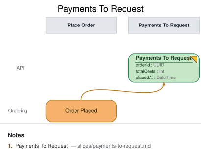

Payments To Request
State View · implemented
{kind=link}
| Kind | Name | Detail |
|---|---|---|
| view | Payments To Request | from Order Placed · { orderId: UUID, totalCents: Int, placedAt: DateTime } |
Slice: Payments To Request

Intent
Every placed order needs a payment requested from the provider before it can be fulfilled. This
slice is the Request Payment automation's to-do list: a queryable projection of orders that have
been placed but not yet had a payment request issued, so the Payment Requester processor (in the
next slice, Request Payment) knows exactly what work remains without re-scanning the full order
history.
Trigger & Actor
No user-facing trigger — this is a pure projection. It is rebuilt by folding Order Placed
events as they arrive. Its "actor" is the Payment Requester processor, which reads it in the
Request Payment slice via from "Payments To Request".
Read Model / View
- View:
Payments To Requestbuilt from events:Order Placed - Consumed by: processor
Payment Requester(sliceRequest Payment) - Freshness / consistency expectation: eventual — the projection lags
Order Placedby normal event-processing latency; the automation tolerates this because Request Payment's own exactly-once invariant (seeslices/request-payment.md,INV-RP-1) is enforced independently of how fast this queue catches up.
| Field | Type | Immutable Fact? | Source / Notes |
|---|---|---|---|
| orderId | UUID | yes | Order Placed.orderId — the fold key; one to-do entry per order |
| totalCents | Int | yes | Order Placed.totalCents — carried through unchanged so the automation can size the payment request without a second lookup |
| placedAt | DateTime | yes | Order Placed.placedAt — carried through for staleness/SLA monitoring on the queue itself |
Invariants / Business Rules
- INV-PTR-1 (idempotent fold): Folding the same
Order Placedevent more than once (e.g. a projection rebuild, or an at-least-once delivery redelivering the event) must never produce more than one queue entry for a givenorderId. The fold is an upsert keyed onorderId, not an append — replay-safety here is what makesem conform-style rebuilds and redelivery both safe. - INV-PTR-2 (removal on request): An order is removed from
Payments To Requestonce aPayment Requestedevent exists for itsorderId(recorded by theRequest Paymentslice that watches this queue). This is the invariant that keeps the to-do list draining: without it, thePayment Requesterprocessor would re-request payment for the same order on every poll — the classic "to-do list that never drains" bug. The removal is driven byPayment Requested, not byPayment Captured, because the queue's job is "has a request been issued", not "has it been paid" — a slow or failed provider response must not cause a duplicate request (seeslices/request-payment.md,INV-RP-1).
Scenarios (Given / When / Then)
- Happy path — Given no prior events for order
O1, WhenOrder Placed(orderIdO1, totalCents5000, placedAt2026-08-20T10:00:00Z) is recorded, ThenPayments To Requestgains one entry forO1(totalCents5000). - Idempotent fold (INV-PTR-1) — Given
Order PlacedforO1has already been folded once, When the sameOrder Placedevent is folded again (rebuild or redelivery), ThenPayments To Requeststill holds exactly one entry forO1, not two. - Drains on request (INV-PTR-2) — Given
O1is present inPayments To Request, WhenPayment RequestedforO1is recorded (in theRequest Paymentslice), ThenO1is removed fromPayments To Requestand thePayment Requesterprocessor never re-selects it. - Untouched by capture — Given
O1has already been removed fromPayments To Requestby itsPayment Requestedevent, WhenPayment CapturedforO1is later recorded, ThenPayments To Requestis unaffected (it isn't a source for this view) — capture outcomes are the concern ofOrder StatusandOpen Orders, not this to-do list.
Alternate & Error Flows
- Rebuild from scratch: replaying the full
Order Placedhistory against an empty projection must converge to the same state as incremental folding (INV-PTR-1 covers this). - Out-of-order delivery: if
Payment Requestedfor an order is somehow processed before that order'sOrder Placedfold completes, the upsert-then-remove sequencing must still leave the order absent from the queue once both events have been folded, not resurrected.
Non-Functional Requirements
- Security / authz: none — internal-only projection, not exposed via any
ui/API in this model. - PII & compliance: none beyond what
Order Placedalready carries (order total, not customer-identifying data at this projection). - Performance / SLA: eventual; the
Payment Requesterautomation's own responsiveness budget (seeslices/request-payment.md) is what bounds acceptable staleness here, not a freshness target of this view in isolation.
Dependencies & Read Models Affected
- Upstream events this slice relies on:
Order Placed(owned by thePlace Orderslice). - Downstream read models / slices affected:
Request Payment(thePayment Requesterprocessor reads this view to decide what to act on).
Open Questions
- Should cancelled/refunded orders be excluded from this queue? Resolved: out of scope for this model revision — Meridian Goods has no cancellation slice yet; revisit if one is added.
- Does the queue need a max-age/alerting concern for orders stuck without a payment request?
Resolved: not modeled here — an operational concern for the
Request Paymentimplementation (e.g. a metric/alert on queue age), not a change to this view's shape.